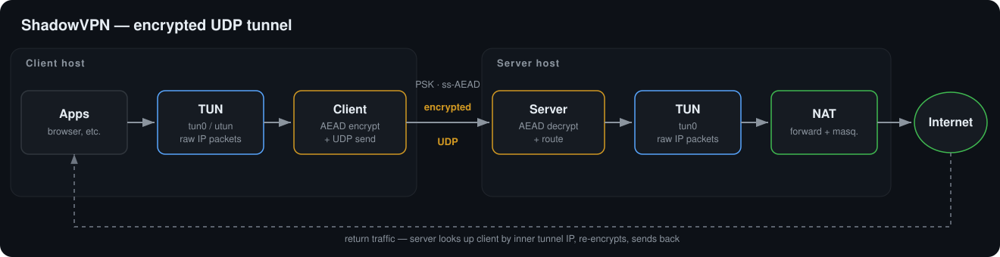
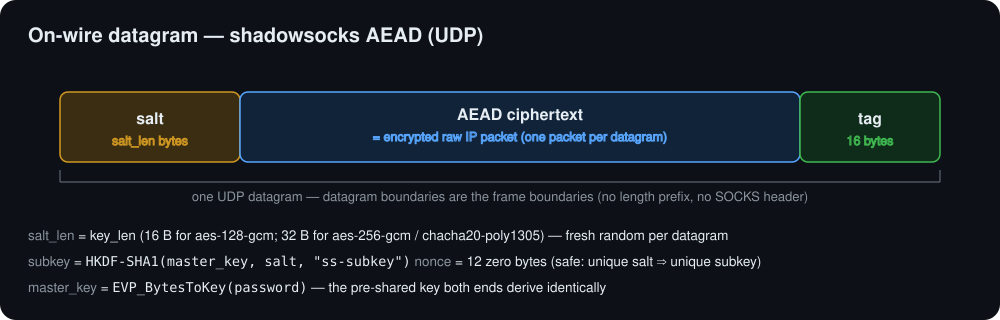
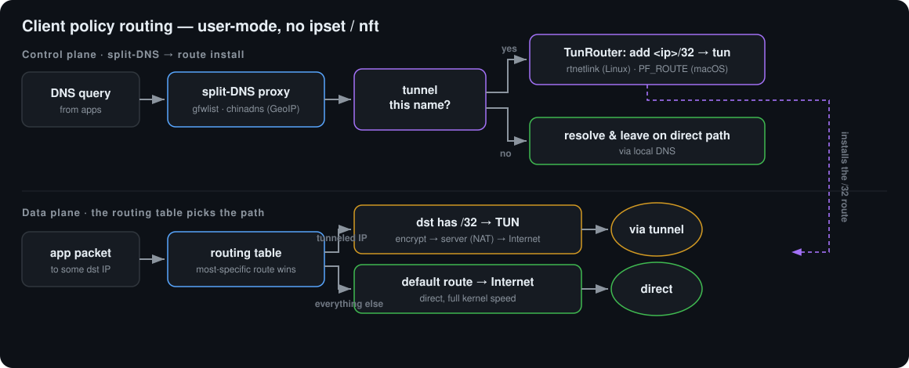

01Why ShadowVPN
A TUN-based client reads IP packets from a virtual interface, encrypts each as a single UDP datagram, and sends it to the server; the server decrypts, routes, and tunnels return traffic back. Small, spec-correct, and entirely in user space.
Spec-correct crypto
Per-datagram random salt, HKDF-SHA1 ss-subkey, zero nonce, AEAD tag — the
shadowsocks UDP scheme exactly, interoperable by construction.
One packet, one datagram
No length prefix, no SOCKS header, no multiplexing. The plaintext is the raw IP packet — UDP boundaries are the frame boundaries.
User-mode TUN
Async TUN on Tokio via tun-rs — Linux tun0 and macOS
utun. Two relay loops plus a keepalive.
Policy routing
Optional split-tunnel: send only selected destinations through the tunnel, decided in user space — no ipset, no nft.
gfwlist · chinadns
Tunnel a domain list, or everything that isn't a China IP. Build the China set from a plain CIDR file or a GeoLite2 database.
Lean Rust
Tokio + RustCrypto, a tiny dependency set, and a Docker end-to-end test suite covering the tunnel, HTTP/3, and policy routing.
02Architecture
The client encrypts every TUN packet to the server over UDP; the server decrypts, writes to its own TUN, and (with forwarding + NAT) lets traffic egress. Return traffic is matched back to the client by its inner tunnel IP and re-encrypted.

03Wire protocol
Each datagram is salt ++ AEAD(ciphertext ++ tag). A fresh random salt
per datagram yields a unique subkey, so the all-zero nonce is never reused.

Deviation from ss-proxy: standard shadowsocks UDP relays prepend a SOCKS target address; ShadowVPN does not. This is a fixed tunnel, so the plaintext is exactly the raw IP packet — everything else matches the AEAD scheme byte-for-byte.
04Policy routing
Instead of pushing all traffic through the tunnel, the client can route only
selected destinations. A built-in split-DNS proxy decides per query, then programs a
per-destination route into the tun via the OS routing socket — rtnetlink on Linux,
PF_ROUTE on macOS. Direct traffic stays on the normal kernel path.

| Mode | Decision | Needs |
|---|---|---|
gfwlist | tunnel names listed in a gfwlist file; everything else is direct | --gfwlist |
chinadns | query a domestic + a clean resolver; tunnel anything that does not resolve to an in-China address | --chnroute or --geoip |
full | no policy routing — the whole TUN is the tunnel (default) | — |
05Quick start
Build the two binaries, then run the server and client. Creating a TUN device
needs root / sudo.
Build
cargo build --release
# produces target/release/shadowvpn-server and shadowvpn-clientServer
sudo ./shadowvpn-server \
--listen 0.0.0.0:8388 \
--password "correct horse battery staple" \
--cipher chacha20-poly1305 \
--tun-ip 10.9.0.1 --peer-ip 10.9.0.2Client
sudo ./shadowvpn-client \
--server vpn.example.com:8388 \
--password "correct horse battery staple" \
--cipher chacha20-poly1305 \
--tun-ip 10.9.0.2 --peer-ip 10.9.0.1Split tunnel (policy routing)
# tunnel only the domains in a gfwlist
sudo ./shadowvpn-client -c client.json --mode gfwlist --gfwlist /etc/shadowvpn/gfwlist.txt
# or: tunnel everything that isn't a China IP, from a GeoLite2 database
sudo ./shadowvpn-client -c client.json --mode chinadns --geoip /etc/shadowvpn/GeoLite2-Country.mmdb
# the client points the system resolver at its split-DNS proxy automatically
# (restored on exit); pass --no-set-dns to manage DNS yourself.Configuration can come from a JSON file, CLI flags, or both (CLI wins). See the full configuration reference and the policy-routing guide in the README.